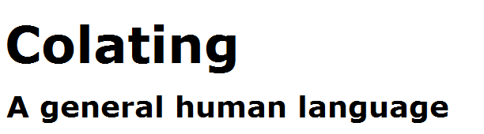

Easy to study, Easy create new word,
Strengthen the logic, Elastic inclusion;
Based on theory, Creative orientation,
Focus on theory of domain, Look to the infinite !
Note 1:: 文件名: 不含无版号的文件，总是维持最新状态；包含版本号的提示性文件，其链接可能失效， 仅影响到版本号的快速查询。
1:: 在文件列表网页，使用"Size"列进行筛选， 可以将不含版本号主体文件、与包含版本号的提示性文件，进行快速分离。
Colating通用拉丁语言文字的创造，它总是试图建立在语言哲学思想基础之上的产物。
Colating 其他相关资料。
语音：和地球上其他的语音动物一样，语音能力是人类与生俱来的产物。
文字：是人类后天智慧创造的结果，是人类区别于其他动物的主要特征之一。
构词法是语法的基础与支持，语法是建立在构词法基础之上的产物。